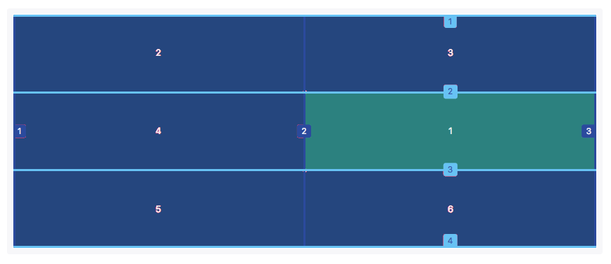
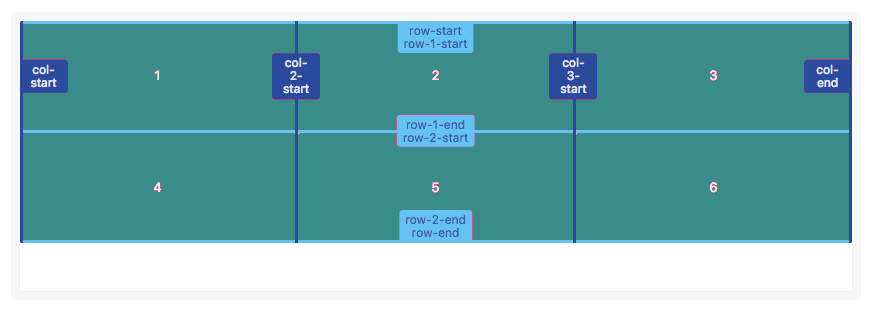
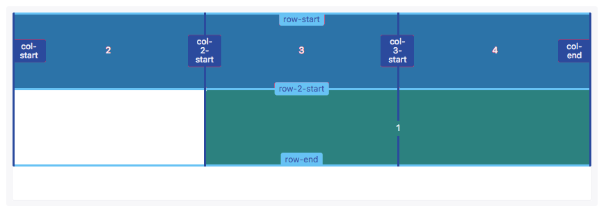

css布局： Table -> Float + Position --> Flex
CSS Grid(网格) 布局（又称为 “Grid(网格)” ），
是一个二维的基于网格的布局系统.
它的目标是完全改变我们基于网格的用户界面的布局方式。
CSS Grid布局是目前CSS 中最强大的布局系统。
与 flexbox 的一维布局系统不同，
CSS Grid 布局是一个二维布局系统，
也就意味着它可以同时处理列和行。
通过将 CSS 规则应用于
父元素 (成为 Grid Container 网格容器)
及 子元素（成为 Grid Items 网格项），
你就可以轻松使用 Grid(网格) 布局。
Grid Container: 应用 display: grid 的元素。
这是所有网格项（Grid Items）的直接父级元素。
## 在这个例子中，container 就是 网格容器(Grid Container) ##
<div class="container">
<div class="item item-1"></div>
<div class="item item-2"></div>
<div class="item item-3"></div>
</div>
Grid Item: 网格容器（Grid Container）的子元素。
（例如直接子元素）
/** 注意 item 元素就是网格项(Grid Item)
但是 sub-item 不是。 **/
<div class="container">
<div class="item"></div>
<div class="item">
<p class="sub-item"></p>
</div>
<div class="item"></div>
</div>
Grid Line: 构成网格结构的分界线。
它们既可以是垂直的（“列网格线(column grid lines)”）
也可以是水平的（“行网格线(row grid lines)”）
并位于行或列的任一侧
例如，这里的黄线就是一条列网格线
Grid Track: 两条相邻网格线之间的空间。
你可以把它们想象成网格的列或行
图是第二条和第三条 行网格线 之间的 网格轨道。
Grid Cell: 两个相邻的行和两个相邻的列网格线之间的空间。
这是 Grid(网格) 系统的一个“单元”。
图第1至第2条 行网格线 和第2至第3条 列网格线 交汇构成的 网格单元格
Grid Area: 4条网格线包围的总空间。
一个网格区域可以由任意数量的网格单元格组成。
图是 行网格线1和3，以及列网格线1和3 之间的网格区域。
容器的属性 [16个]
* display
* grid-template-columns
* grid-template-rows
* grid-template-areas
* grid-template
* grid-column-gap
* grid-row-gap
* grid-gap
* justify-items
* align-items
* justify-content
* align-content
* grid-auto-columns
* grid-auto-rows
* grid-auto-flow
* grid
网格项的属性 [9个]
* grid-column-start
* grid-column-end
* grid-row-start
* grid-row-end
* grid-column
* grid-row
* grid-area
* justify-self
* align-self
.container {
display: grid | inline-grid | subgrid;
}
将元素定义为网格容器,并为其内容建立新的 网格格式上下文。
subgrid:你希望它的行/列的大小继承自它的父级网格容器，而不是自己指定的。
column: 指定的每个值来创建每列的列宽
row: 指定的每个值可以创建每行的高度
函数来创建网格轨道的最小或最大尺寸
minmax()函数接受两个参数：
第一个参数定义网格轨道的最小值，
第二个参数定义网格轨道的最大值。
可以接受任何长度值，也接受auto值。
auto值允许网格轨道基于内容的尺寸拉伸或挤压。
grid-template-rows: minmax(100px, auto);
grid-template-columns: minmax(auto, 50%) 1fr 3em;
在这个示例中，第一行的高度最小值是100px，但其最大值为auto，允许行高可以变大超过100px。
使用repeat()可以创建重复的网格轨道。
这个适用于创建相等尺寸的网格项目和多个网格项目。
grid-template-columns: 60px repeat(2, 1fr);
grid-template-rows: repeat(2, 60px);
也接受两个参数：
第一个参数定义网格轨道应该重复的次数;
第二个参数定义每个轨道的尺寸。
只能创建列与列或行与行之间的间距
但不能创建列和行与网格容器边缘的间距
// 行间距 20px
// grid-row-gap: 20px;
// 列间距 5rem
// grid-column-gap: 5rem;
#第一个值是设置grid-row-gap的值#
#第二个值设置grid-column-gap的值#
grid-gap: 50px 1em;
网格线实际上是代表线的开始、结束，
两者之间就是网格列或行。
每条线是从网格轨道开始，网格的网格线从1开始，每条网格线逐步增加1

grid-row-start: 2;
grid-row-end: 3;
grid-column-start: 2;
grid-column-end: 3;
两列三行的网格创建三条列网格线和四条行网格线。
item1就是由行和列的号码重新定位。
----------------------------
如果一个网格项目跨度只有一行或一列，
那么grid-row-end和grid-column-end不是必需的。
简写: 两个值
grid-row是grid-row-start和grid-row-end的简写。
grid-column是grid-column-start和grid-column-end的简写。
grid-row: 2;
grid-column: 3 / 4;
如果提供两个值，
第一个值是grid-row-start、grid-column-start的值，
第二个值是grid-row-end、grid-column-end的值，
两者之间必须要用/隔开。
简写: 四个值
grid-area: 2 / 2 / 3 / 3;
如果指定四个值:
第一个值对应grid-row-start，
第二个值对应grid-column-start，
第三个值对应grid-row-end
第四个值对应grid-column-end
默认情况下网格项目跨度只有一个列和行，但可以跨越多个行和列
grid-column-start: 1;
grid-column-end: 4;
可以通过设置grid-column-end和grid-column-start距离多个网络线号实现多个列跨越。
grid-row-start: 1;
grid-row-end: 5;
同样的可以通过grid-row-end和grid-row-start距离多个网格号实现多个行跨越。
合并 span
关键词span后面紧随数字，表示合并多少个列或行。
grid-row: 2 / span 2;
grid-column: span 2;
grid-template-rows: [row-1-start] 1fr [row-2-start] 1fr [row-2-end];
grid-template-columns: [col-1-start] 1fr [col-2-start] 1fr [col-3-start] 1fr [col-3-end];
grid-template-rows和grid-template-columns定义你的网格，将名称分配给网格线。
分配网格线名称必须用方括号[网格线名称]，
然后后面紧跟网格轨道的尺寸值。
可以在方括号中添加多个名称来命名网格线名称，
使用多外名称命名网格线名称时，
名称间要用空格隔开。
grid-template-rows: [row-start row-1-start] 1fr [row-1-end row-2-start] 1fr [row-2-end row-end];
grid-template-columns: [col-start] 1fr [col-2-start] 1fr [col-3-start] 1fr [col-end];

每一个网格线的名称可以用来定位网格项目的位置。
使用网格线名称设置网格项目位置和使用网格线号码设置网格项目位置类似。
grid-row-start: row-2-start;
grid-row-end: row-end;
grid-column-start: col-2-start;
grid-column-end: col-end;

引用网格线名称的时候不应该带方括号
grid-row和grid-column简写属性也适用于网格线名称，也可以用来设置网格项目的位置。
grid-row: row-2-start / row-end;
grid-column: col-2-start / col-end;
使用repeat()函数可以给网格线分配相同的名称。
这可以节省一定的时间。
grid-template-rows: repeat(3, [row-start] 1fr [row-end]);
grid-template-columns: repeat(3, [col-start] 1fr [col-end]);
使用repeat()函数可以给网格线命名，
这也导致多个网格线具有相同的网格线名称。
~~~~~~~~~~~~~~~~~~~~~~
相同网格线名称指定网格线的位置和名称，
也且会自动在网格线名称后面添加对应的数字，
使其网格线名称也是唯一的标识符。
grid-row: row-start 2 / row-end 3;
grid-column: col-start / col-start 3;
网格线的名称和数字之间需要用空格分开。
在这个示例中，
item1放置位置是row-start第2条开始，至row-end的第3条结束，
这用来设置item1在行的起始和结束位置；
-------------------
col-start的第1条开始，至col-start的第3条结束
（col-start的第3条也对应的是col-end的第2条），
用来设置item1在列的起始位置和结束位置。
通过引用 grid-area 属性指定的 网格区域(Grid Area) 名称来定义网格模板。
重复网格区域的名称导致内容跨越这些单元格。
一个点号（.）代表一个空的网格单元。
这个语法本身可视作网格的可视化结构。
<grid-area-name>：
由网格项的 grid-area 指定的网格区域名称
.（点号） ：代表一个空的网格单元
none：不定义网格区域
.container {
grid-template-areas:
" | . | none | ..."
"...";
}
.container {
grid-template-columns: 50px 50px 50px 50px;
grid-template-rows: auto;
grid-template-areas:
"header header header header"
"main main . sidebar"
"footer footer footer footer";
}
.item-a {
grid-area: header;
}
.item-b {
grid-area: main;
}
.item-c {
grid-area: sidebar;
}
.item-d {
grid-area: footer;
}
上面的代码将创建一个 4 列 3 行的网格。
整个顶行将由 header 区域 组成。
中间一排将由两个 main 区域，
一个是空单元格，一个 sidebar 区域组成。
最后一行全是 footer 区域组成。
你的声明中的每一行都需要有相同数量的单元格。
你可以使用任意数量的相邻的 点. 来声明单个空单元格。
只要这些点.之间没有空隙隔开，他们就表示一个单一的单元格。
注意你 [并非]用这个语法来命名网格线，只是命名网格区域。
当你使用这种语法时，区域两端的网格线实际上是自动命名的。
如果你的网格区域的名字是 foo，
该区域的起始 行网格线 和起始 列网格线 的名称将是 foo-start，
而最后一行 行网格线 和最后一列 列网格线 的名字是 foo-end。
这意味着一些网格线可能有多个名字，
如上例中最左边的网格线，它将有三个名称：header-start，main-start 和 footer-start 。
像网格线名称一样，网格区域的名称也可以使用grid-template-areas属性来命名。
引用网格区域名称也可以设置网格项目位置。
grid-template-areas: "header header"
"content sidebar"
"footer footer";
grid-template-rows: 150px 1fr 100px;
grid-template-columns: 1fr 200px;
设置网格区域的名称应该放置在单引号或双引号内，每个名称由一个空格符分开。
网格区域的名称，每组（单引号或双引号内的网格区域名称）定义了网格的一行，
每个网格区域名称定义网格的一列。
grid-row-start、grid-row-end、
grid-column-start和grid-column-end
可以引用网格区域名称，用来设置网格项目位置。
grid-row-start: header;
grid-row-end: header;
grid-column-start: header;
grid-column-end: header;
grid-row: footer;
grid-column: footer;
简写的grid-row和grid-column也可以引用网格区域名称，
设置网格项目的位置。
grid-area: sidebar;
grid-area简写属性也可以引用网格区域的名称来设置网格项目的位置。
当网格项目确认在显式网格之外时就会创建隐性网格，
当没有足够的空间或者显式的网格轨道来设置网格项目，
此时网格项目就会自动创建隐式网格。
使用grid-auto-rows、
grid-auto-columns和grid-auto-flow
属性可以定义隐式的网格。
grid-template-rows: 70px;
grid-template-columns: repeat(2, 1fr);
grid-auto-rows: 140px;
grid-template-rows: 70px;
grid-template-columns: repeat(2, 1fr);
grid-auto-rows: 140px;
在这个例子中我们只定义了一行（轨道），
所以item1和item2的高都是70px。
~~~~~~~~~~~~~~~~~~~~~~~~~~~~~~~~~~~~~~~~
第二行（轨道）自动创建了item3和item4空间。
grid-auto-rows定义隐式网格中的行（轨道）的大小，
因此item3和item4的高度是140px。
//网格默认流方向是row
grid-auto-row: row
//可以把网格流的方向改变成column
grid-auto-flow: column
grid-template-columns: 100px 200px;
grid-auto-flow: column;
grid-auto-columns: 1fr;
在这个例子中，我们只定义了前两列的轨道尺寸。
item1的尺寸是100px，item2的尺寸是200px。
-------------------------------------------
使用grid-auto-flow:column自动创建了隐式网格，
用来放置item3、item4和item5，
并且这三个列（轨道）的尺寸由grid-auto-columns来定义。
通常可以将网格线命名成任何你想命名的名称，
如果网格线名称添加-start和-end的后缀，
其实也隐式的创建一个网格区域，可以用来设置网格项目的位置。
grid-template-rows: [outer-start] 1fr [inner-start] 1fr [inner-end] 1fr [outer-end];
grid-template-columns: [outer-start] 1fr [inner-start] 1fr [inner-end] 1fr [inner-end];
在这个示例中，
行和列都具有inner-start和inner-end网格线名称，
同时也对应的创建一个隐式网格区域名称inner。
grid-area: inner
网格项目定位可以通过网格区域名称来设置，而不需要使用网格线名称。
隐式的指定网格线反向指定了隐式的网格区域名称，
命名的网格区域隐式的命名了网格线名称。
grid-template-areas: "header header"
"content sidebar"
"footer footer";
grid-template-rows: 80px 1fr 40px;
grid-template-columns: 1fr 200px;
grid-row-start: header-start;
grid-row-end: content-start;
grid-column-start: footer-start;
grid-column-end: sidebar-end;
在这个示例中,header通过隐式的网格线名称设置其位置。
网格项目可以具有层级和堆栈，必要时可能通过z-index属性来指定
.item-a,
.item-b {
grid-row-start: 1;
grid-column-end: span 2;
}
.item-a {
grid-column-start: 1;
z-index: 1;
}
.item-b1 {
grid-column-start: 2;
}
在这个例子中，itema和itemb的开始行都是1，
item-a列的开始是1，
item-b列的开始是2，
并且它们都跨越两列。
两个网格项目都是由网格线数字定位，结果这两个网格项目重叠了。
默认情况下，item-b在item1上面，
但是，我们在item-a中设置了z-index:1;
导致item-a在item-b之上。
当然 ，我们可以设置item-b:z-index:2
justify-items和justify-self指定网格项目沿着行轴对齐方式；
align-items和align-self指定网格项目沿着列轴对齐方式。
justify-items和align-items应用在网格容器上
它们的属性值有：
auto
normal
start
end
center
stretch
baseline
first baseline
last baseline
.container {
//定义在容器元素
//水平方向
// justify-items: start;
justify-items: center;
// justify-items: end;
// justify-items: stretch;
//垂直方向
// align-items: start;
align-items: center;
// align-items: end;
// align-items: stretch;
}
align-self和justify-self属性用于网格项目自身对齐方式。
它们主要接受以下属性值：
auto
normal
start
end
center
stretch
baseline
first baseline
last baseline
单个元素对齐方式
.item-a {
justify-self: center;
align-self: center ;
}
网格轨道对齐可以相对于网格容器行和列轴。
align-content指定网格轨道沿着行轴对齐方式；
justify-content指定网格轨道沿着列轴对齐方式。
它们支持下面属性：
normal
start
end
center
stretch
space-around
space-between
space-evenly
baseline
first baseline
last baseline
.container{
justify-content: start | center | end;
justify-content: space-around;
justify-content: space-between;
justify-content: space-evenly;
align-content: start | center | end;
align-content: space-around;
align-content: space-between;
align-content: space-evenly;
}